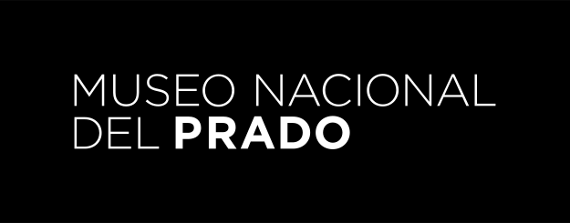
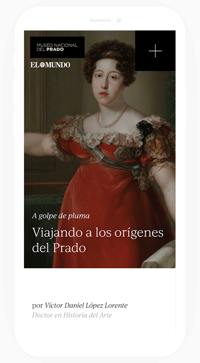
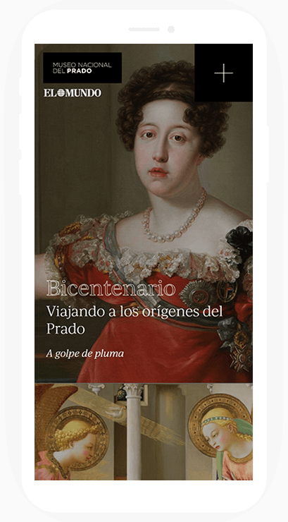

The briefing
Un paseo por El Prado
- Client The Prado
Museum - Date 2019
- Role Art direction & design
Front-end dev.

A deeper vision of ___ project

For five years in _ row The Prado Museum ___ the newspaper EL MUNDO ____ together.
On the occasion of ___ new season of exhibitions __ The Prado Museum , a new redesign and ___________ was made in order __ update the website.
For this I was __ charge of the art ___ design direction of the ___ website, providing it with greater __________ to improve usability and __________.
Bicentennial
The Prado Museum celebrates 200 years reflecting on its _______ but with an eye ______ on the future. For ____ reason it was necessary __ do something to live __ to the circumstances.
A better experience on ______ devices
We wanted to improve ___ overall experience of the _______ but mainly on smartphones. So __ created a responsive version ____ was crafted from the ground ____ tiny screens as our ____ focus.

